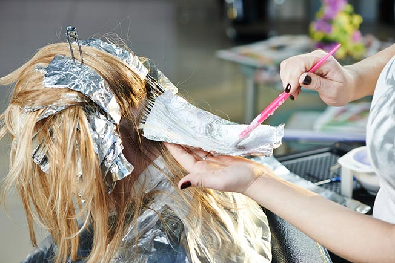
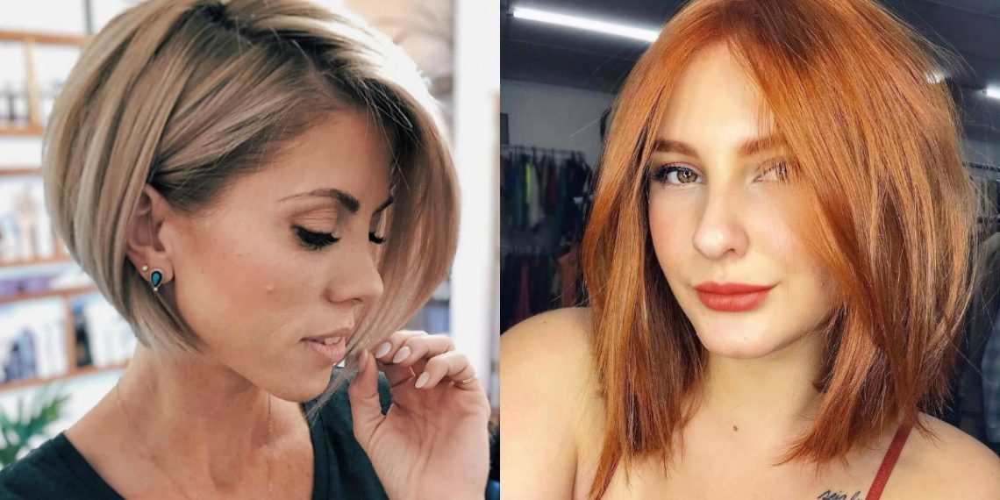
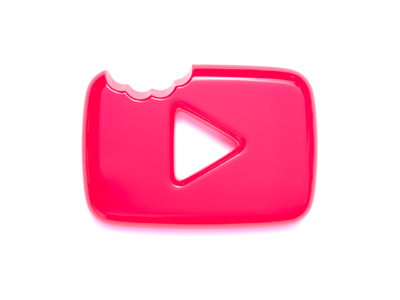
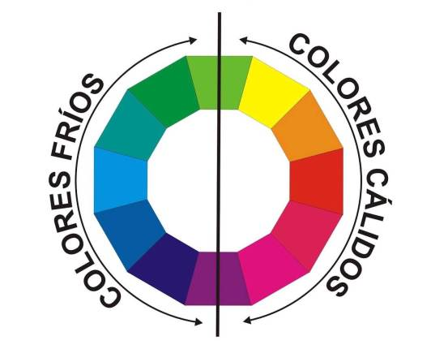

¡Las BeautyPads son ecológicas!
BeautyPads es una empresa mexicana, idea innovadora y ecológica
¿por qué ecológica?
Hoy en día los estilistas profesionales, todavía utilizan el papel aluminio lo cual generan toneladas de basura al año
debido a que el papel aluminio es necesario para la decoloración del cabello, método efectivo pero dañino para el medio ambiente
nosotros como estilistas profesionales tenemos la opción de cambiar los metodos más comunes del estilismo.

!NO más aluminio por amor a nuestro planeta!
BeautyPads concuerda con los cambios, son 100% lavables y reutilizables, la idea es ayudar al planeta tierra y a los estilistas profesionales
con BeautyPads podemos evitar un gran porcentaje de basura al año, si nos ponemos a imaginar cuantas personas entran y salen en los salones de belleza
a nivel global, quedaríamos sorprendidos de la enorme cifra, ahora imaginemos todas las montañas de aluminio que ya fueron desechadas,
que tan corto tiempo de vida para el aluminio no?
es ahí donde BeautyPads llega a salvarnos con su capa dorada.
Todos podemos utilizar estas hermosas y practicas herramientas de trabajo, con el fin de hacer los cabellos deseados
para los clientes, puedes tener en tus manos el precioso oro rosa.
Cientos de estilistas profesionales están utilizando BeautyPads, vamos animate se parte de la familia
BeautyPads.
!Las damas con cabello corto no se quedan atrás¡
!BeautyPads ha diseñado la solución¡
Hoy en día conocemos a muchas artistas con el look del cabello corto, o tenemos un familiar con el cabello corto, amigas, novia
compañeras de trabajo, vecinas y muchisímos más conocidos, nosotras como mujeres aveces pedimos un cambio de look a gritos verdad?
esa es una ventaja que tiene el aluminio pero no desventaja para BeautyPads, creamos unas BeautyPads a la medida para las chicas con cabello corto
no te preocupes si tus clientes quieren un cambio de look como por ejemplo un: pixie, Bob, Bob Midi, Carré, En capas, Asimétrico o Despuntado.
BeautyPads tiene la solución en tus manos.
Tenemos en el mercado las MiniPads, es maravilloso trabajar con ellas al igual que con las pads originales, las medidas son:
25cm de largo y 12cm de ancho, tamaño ideal para cabellos semilargos, crea los looks que siempre has deseado de una manera mucho
más simplicada con BeautyPads, totalmente ecológicas 100% garantizado, no afecta en la decoloración y los más increíble
a un precio súper especial, vamos se parte de BP.

!No te preocupes si eres de otro país!
BeautyPads tiene la solución: llegara a tiempo y en perfecto estado, en la caja de BeautyPads llevara un acrílico sumamente necesario
para aplicar el decolorante en las pads, es un apoyo resistente, las medidas del acrílico son: 50cm de largo y 12cm de ancho,
es frájil, para no correr riesgos llegara en medio de las pads la caja tendra una etiqueta de:
Frájil contiene acrílico dentro no te preocupes si no vives en México las BeautyPads llegaran en cuestión de días
no te preocupes dale click en comprar. Puedes encontrarnos en mercado libre o enviar un mensaje a nuestra página oficial
en Facebook..
No te preocupes solo dale click..
!Cuidados de las BeautyPads¡
Loa Cuidados de las BeautyPads son muy sencillospero efectivos,
a continuación los aspectos más importantes:
- Colocarlas en un lugar fresco.
- No dejarlas en lugares con mucha temperatura.
- Después de utlizarlas, siempre lávalas con mucho Cuidado.
- Guardalas en un lugar seguro.
- No las coloques al alcance de niños.
- Por último y más importante:
No desperdicies mucha agua al lavarlas.
Beneficios de BP..
Con BP todas ganamos: cabellos hermosos de nuestras clientes y la bellísima madre naturaleza, un producto elaborado en México
para todos los salones de belleza, academias etc.. Si estas iniciando en nuestro complejo mundo de la belleza te recomendamos
inicies con BeautyPads, tendrás mucha ventaja, todos se preguntarán que es esa preciosa textura de color rosa y tú les responderás son BeautyPads.
Cualquier duda puedes consultarnos por nuestro grupo de facebook, instagram o Whatsapp, con mucho gusto te respondemos,
tenemos unos excelentes cursos sobre bastantes consejos acerca de la aplicación de BeautyPads, si te gustaría
saber acerca de otro tema, puedes dejarnos en los comentarios de cualquiera de nuestras redes sociales o mandarnos
un mensaje, pronto tendremos nuevos y revolucionarios modelos de BP especialmente diseñados para ti.
Suscríbete a nuestro canal en Youtube y activa las notificaciones, no te pierdas de todos nuestros contenidos

!La decoloración del cabello es necesario, BeautyPads la mejor opción¡
Nosotros los seres humanos siempre buscamos salir de lo cotidiano e innovar nuevas opciones
para estar siempre actualizados respecto a todos los demás aspectos por ejemplo:
Dejar de producir demasiada basura al año, crear nuevas herramientas de trabajo etc..
Somos una empresa comprometida con el medio ambiente, la decoloración es muy importante para
crear los mejores efectos en los cabellos de nuestros clientes, BP lo hace mucho más practico
junto con el acrílico, herramientas de trabajo qué sin duda te serán de mucha utilidad en tu
salón de belleza.

!Muchas gracias por ser parte de BeautyPads¡
No olvides que cualquier duda que tengas nosotros te ayudamos, muchas gracias por visitar nuestra página web
significa que eres miembro de la familia BeautyPads, en la barra de navegación estan los links para qué puedas
contactarnos más facil, recuerda tu compra es una gran ayuda al planeta.
Un saludo cordial de parte de toda la organización de BeautyPads.
!Todos los estilistas tienen derecho a la vanidad
y tenemos la opción de BeautyPads¡
Te dejamos el link de nuestro grupo oficial en Facebook para compartir los tips y
si les ha gustado nuestro producto dale un like en nuestra página oficial y suscríbete
a nuestro canal.
Grupo oficial en facebook.
!Siguenos en nuestras redes sociales¡